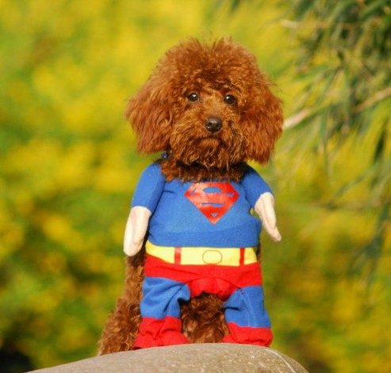

<!DOCTYPE html>
<html lang="en">
<head>
	<meta charset="UTF-8">
	<title>垂直对齐</title>
	<style type="text/css">
		/*#d1{
			width: 300px;
			height: 300px;
			background: beige;
			font-size: 20px;
			/*设置行高等于父级元素的高即可
			line-height: 300px;
		}*/
		/*#box{
			vertical-align: top;
			background: #cccccc;
		}*/
		/*#box img{
			vertical-align: middle;
		}
*/		#div2{
			width: 600px;
			height: 300px;
			background: red;
			position: relative;
		}
		#div1{
			width: 100px;
			height: 100px;
			background: blue;
			/*使用绝对定位脱离文档流*/
			position: absolute;
			top:0;
			bottom: 0;
			right: 0;
			left: 0;
			margin: auto;
		}
		
	</style>
</head>
<body>
	<!-- 1.文字的垂直居中 -->
	<!-- <div id="d1">
		真正关心老百姓的生活和喜怒
	</div> -->
	<!-- 2.图片的垂直居中 
			使用vertical-align:  该属性定义行内元素的基线相对于该元素所在行的基线的对齐方式
			baseline 基线对齐
			top   父级元素content区域的顶端
			middle 元素的中线与所在行的基线对齐
			bottom  父级元素content区域的低端


			text-top 文本的最高位置与图片对齐
			text-bottom 文本的最低位置与图片对齐
			super	与上标文字的底端对齐
			sub   与下标文字的底端对齐--> 
		<!-- <div id="box">
			adasxxxxxxxxxgda
		</div> -->
		<!-- 
		a.如果图片的高度就是父元素的高度,直接给图片设置vertical-align:middle即可

		b.如果图片的高度比父元素的高度小,除了设置图片的vertical-align:middle还需要设置父元素的行高为整个父元素高度. -->
	<!-- 块级元素(div)垂直居中
	给子元素设置绝对定位,top,bottom都给0,上下margin给auto,要居中的父级一定要设置非static的定位属性(一般会给relative) -->
		<div id="div2">
			<div id="div1">
			
		</div>
		</div>
		
		
</body>
</html>


